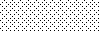

Image Formats
A Word about Colorspaces • Supported Formats • Pseudo Formats • Built-in Images • Built-in Patterns • Embedded Profiles
ImageMagick uses an ASCII string known as magick (e.g. GIF) to identify file formats, algorithms acting as formats, built-in patterns, and embedded profile types. Support for some of the formats are delegated to libraries or external programs. The Installation Guide describes where to find these distributions and any special configuration options required.
To get a complete listing of which image formats are supported on your system, type
magick identify -list format
On some platforms, ImageMagick automagically processes these extensions: .gz for Zip compression, .Z for Linux compression, .bz2 for block compression, and .pgp for PGP encryption. For example, a PNM image called image.pnm.gz is automagically uncompressed.
A Word about Colorspaces
A majority of the image formats assume an sRGB colorspace (e.g. JPEG, PNG, etc.). A few support only linear RGB (e.g. EXR, DPX, CIN, HDR) or only linear GRAY (e.g. PGM). A few formats support CMYK. Then there is the occasional format that also supports LAB (that is CieLAB) (e.g. TIFF, PSD, JPG, JP2). To determine the colorspace of your image, use this command:
$ magick identify -verbose image.jpg Image: image.jpg Format: JPEG (Joint Photographic Experts Group JFIF format) ... Colorspace: sRGBOR use the appropriate percent escape
$ magick image.jpg -print "%[colorspace]\n" null: sRGB
When processing an image, be aware of the colorspace. Many image processing algorithms assume a linear RGB colorspace. Although you may get satisfactory results processing in the sRGB colorspace, you may get improved results in linear RGB (essentially sRGB with the gamma function removed). For example,
magick image.jpg -colorspace RGB -resize 50% -colorspace sRGB resize.jpg
As of IM 6.7.8-2 one can properly work in LAB colorspace whether or not Imagemagick is HDRI-enabled. Essentially the A and B channels are stored with a 50% gray bias, to allow it to handle the negatives required by the format.
magick lab.tif -resize 50% resize.jpg
Again, it may not make sense for some image processing operators to work directly in LAB space, but ImageMagick permits it and generally returns reasonable results.
Supported Image Formats
ImageMagick supports reading over 100 major file formats (not including sub-formats). The following table provides a summary of the supported image formats.
| Tag | Mode | Description | Notes |
|---|---|---|---|
| AAI | RW | AAI Dune image | |
| APNG | RW | Animated Portable Network Graphics | Note, you must use an explicit image format specifier to read an APNG (apng:myImage.apng) image sequence, otherwise it assumes a PNG image and only reads the first frame. |
| ART | RW | PFS: 1st Publisher | Format originally used on the Macintosh (MacPaint?) and later used for PFS: 1st Publisher clip art. |
| ARW | R | Sony Digital Camera Alpha Raw Image Format | Set -define dng:use-camera-wb=true to use the RAW-embedded color profile for Sony cameras. You can also set these options: use-auto-wb, use-auto-bright, and output-color. |
| AVI | R | Microsoft Audio/Visual Interleaved | |
| AVIF | RW | Format derived from the keyframes of AV1 video | |
| AVS | RW | AVS X image | |
| BAYER | RW | Raw mosaiced samples | Use -size and -depth to specify the image width, height, and depth. To specify a single precision floating-point format, use -define quantum:format=floating-point. Set the depth to 32 for single precision floats, 64 for double precision, and 16 for half-precision. For signed pixel data, use -define quantum:format=signed. |
| BPG | RW | Better Portable Graphics | Use -quality to specify the image compression quality. To meet the requirements of BPG, the quality argument divided by 2 (e.g. -quality 92 assigns 46 as the BPG compression. |
| BMP, BMP2, BMP3 | RW | Microsoft Windows bitmap | By default the BMP format is version 4. Use BMP3 and BMP2 to write versions 3 and 2 respectively. Use -define bmp:ignore-filesize to ignore the filesize check. |
| BRF | W | Braille Ready Format | Uses juxtaposition of 6-dot braille patterns (thus 6x2 dot matrices) to reproduce images, using the BRF ASCII Braille encoding. |
| CALS | R | Continuous Acquisition and Life-cycle Support Type 1 image | Specified in MIL-R-28002 and MIL-PRF-28002. Standard blueprint archive format as used by the US military to replace microfiche. |
| CIN | RW | Kodak Cineon Image Format | Use -set to specify the image gamma or black and white points (e.g. -set gamma 1.7, -set reference-black 95, -set reference-white 685). Properties include cin:file.create_date, cin:file.create_time, cin:file.filename, cin:file.version, cin:film.count, cin:film.format, cin:film.frame_id, cin:film.frame_position, cin:film.frame_rate, cin:film.id, cin:film.offset, cin:film.prefix, cin:film.slate_info, cin:film.type, cin:image.label, cin:origination.create_date, cin:origination.create_time, cin:origination.device, cin:origination.filename, cin:origination.model, cin:origination.serial, cin:origination.x_offset, cin:origination.x_pitch, cin:origination.y_offset, cin:origination.y_pitch, cin:user.data. |
| CIP | W | Cisco IP phone image format | |
| CMYK | RW | Raw cyan, magenta, yellow, and black samples | Use -size and -depth to specify the image width, height, and depth. To specify a single precision floating-point format, use -define quantum:format=floating-point. Set the depth to 32 for single precision floats, 64 for double precision, and 16 for half-precision. |
| CMYKA | RW | Raw cyan, magenta, yellow, black, and alpha samples | Use -size and -depth to specify the image width, height, and depth. To specify a single precision floating-point format, use -define quantum:format=floating-point. Set the depth to 32 for single precision floats, 64 for double precision, and 16 for half-precision. |
| CR2 | R | Canon Digital Camera Raw Image Format | Requires an explicit image format otherwise the image is interpreted as a TIFF image (e.g. cr2:image.cr2). |
| CRW | R | Canon Digital Camera Raw Image Format | |
| CUBE | R | A lookup table containing math instructions to replace a color (based on RGB value) by another one. It's like a color grading preset. This process is done pixel by pixel with a very high accuracy. | Select levels like this: cube:Vibrant.cube[8] for level 8 |
| CUR | R | Microsoft Cursor Icon | |
| CUT | R | DR Halo | |
| DCM | R | Digital Imaging and Communications in Medicine (DICOM) image | Used by the medical community for images like X-rays. ImageMagick sets the initial display range based on the Window Center (0028,1050) and Window Width (0028,1051) tags. Use -define dcm:display-range=reset to set the display range to the minimum and maximum pixel values. Use -define dcm:rescale=true to enable interpretation of the rescale slope and intercept settings in the file. Use -define dcm:window=centerXwidth to override the center and width settings in the file with your own values. |
| DCR | R | Kodak Digital Camera Raw Image File | |
| DCX | RW | ZSoft IBM PC multi-page Paintbrush image | |
| DDS | RW | Microsoft Direct Draw Surface | Use -define to specify the compression (e.g. -define dds:compression={dxt1, dxt5, none}). Other defines include dds:cluster-fit={true,false}, dds:weight-by-alpha={true,false}, dds:fast-mipmaps={true,false}, and use dds:mipmaps to set the number of mipmaps (use fromlist to use the image list). |
| DEBUG | W | Raw pixel debug file, likely only useful to the developers | |
| DIB | RW | Microsoft Windows Device Independent Bitmap | DIB is a BMP file without the BMP header. Used to support embedded images in compound formats like WMF. |
| DJVU | R | ||
| DMR | RW | Digital media repository | Requires the MagickCache delegate library. Supported options include dmr:path (location of repository), dmr:passkey (key to open digital media repository), dmr:passphrase (optionally scramble or unscramble media resource), and dmr:ttl (time-to-live); Set the dmr:meta (metadata) property to store the resource as meta data. |
| DNG | R | Digital Negative | Requires an explicit image format otherwise the image is interpreted as a TIFF image (e.g. dng:image.dng). |
| DOT | R | Graph Visualization | Use -define to specify the layout engine (e.g. -define dot:layout-engine=twopi). |
| DPX | RW | SMPTE Digital Moving Picture Exchange 2.0 (SMPTE 268M-2003) | Use -set to specify the image gamma or black and white points (e.g. -set gamma 1.7, -set reference-black 95, -set reference-white 685). |
| EMF | R | Microsoft Enhanced Metafile (32-bit) | Only available under Microsoft Windows. Use -size command line option to specify the maximum width and height. |
| EPDF | RW | Encapsulated Portable Document Format | |
| EPI | RW | Adobe Encapsulated PostScript Interchange format | Requires Ghostscript to read. |
| EPS | RW | Adobe Encapsulated PostScript | Requires Ghostscript to read. |
| EPS2 | W | Adobe Level II Encapsulated PostScript | Requires Ghostscript to read. |
| EPS3 | W | Adobe Level III Encapsulated PostScript | Requires Ghostscript to read. |
| EPSF | RW | Adobe Encapsulated PostScript | Requires Ghostscript to read. |
| EPSI | RW | Adobe Encapsulated PostScript Interchange format | Requires Ghostscript to read. |
| EPT | RW | Adobe Encapsulated PostScript Interchange format with TIFF preview | Requires Ghostscript to read. |
| EXR | RW | High dynamic-range (HDR) file format developed by Industrial Light & Magic | See High Dynamic-Range Images for details on this image format. To specify the output color type, use -define exr:color-type={RGB,RGBA,YC,YCA,Y,YA,R,G,B,A}. Use -sampling-factor to specify the sampling rate for YC(A) (e.g. 2x2 or 4:2:0). Requires the OpenEXR delegate library. |
| FARBFELD | RW | Farbfeld lossless image format | sRGB 16-bit RGBA lossless image format |
| FAX | RW | Group 3 TIFF | This format is a fixed width of 1728 as required by the standard. See TIFF format. Note that FAX machines use non-square pixels which are 1.5 times wider than they are tall but computer displays use square pixels so FAX images may appear to be narrow unless they are explicitly resized using a resize specification of 100x150%. |
| FITS | RW | Flexible Image Transport System | To specify a single-precision floating-point format, use -define quantum:format=floating-point. Set the depth to 64 for a double-precision floating-point format. |
| FL32 | RW | FilmLight floating point image format | |
| FLIF | RW | Free Lossless Image Format | |
| FPX | RW | FlashPix Format | FlashPix has the option to store mega- and giga-pixel images at various resolutions in a single file which permits conservative bandwidth and fast reveal times when displayed within a Web browser. Requires the FlashPix SDK. Specify the FlashPix viewing parameters with the -define fpx:view. |
| FTXT | RW | Read and write multispectral channels as formatted text | |
| GIF | RW | CompuServe Graphics Interchange Format | 8-bit RGB PseudoColor with up to 256 palette entries. Specify the format GIF87 to write the older version 87a of the format. Use -transparent-color to specify the GIF transparent color (e.g. -transparent-color wheat). |
| GPLT | R | Gnuplot plot files | Requires gnuplot4.0.tar.Z or later. |
| GRAY | RW | Raw gray samples | Use -size and -depth to specify the image width, height, and depth. To specify a single precision floating-point format, use -define quantum:format=floating-point. Set the depth to 32 for single precision floats, 64 for double precision, and 16 for half-precision. For signed pixel data, use -define quantum:format=signed. ImageMagick supports scanline padding. If your image is not padded, you can instead read the image as a 1-D vector and reshape it: magick -size 38700x1 -depth 1 gray:image.bin -reshape 180x215 image.png. |
| GRAYA | RW | Raw gray and alpha samples | Use -size and -depth to specify the image width, height, and depth. To specify a single precision floating-point format, use -define quantum:format=floating-point. Set the depth to 32 for single precision floats, 64 for double precision, and 16 for half-precision. |
| HDR | RW | Radiance RGBE image format | |
| HDR | RW | Radiance RGBE image format | |
| HEIC | RW | Apple High efficiency Image Format | Set the quality to 100 to produce lossless HEIC images. Requires the libheif delegate library. Recognized defines include heic:preserve-orientation={true,false}, depth-image={true,false}, heic:speed, and heic:chroma. |
| HPGL | R | HP-GL plotter language | Requires hp2xx-3.4.4.tar.gz |
| HRZ | RW | Slow Scan TeleVision | |
| HTML | RW | Hypertext Markup Language with a client-side image map | Also known as HTM. Requires html2ps to read. Note, the \\xff character is not permitted in any filename when exporting client-side image maps. |
| ICO | R | Microsoft icon | Also known as ICON. |
| INFO | W | Format and characteristics of the image | |
| ISOBRL | W | ISO/TR 11548-1 BRaiLle | Uses juxtaposition of 8-dot braille patterns (thus 8x2 dot matrices) to reproduce images, using the ISO/TR 11548-1 Braille encoding. |
| ISOBRL6 | W | ISO/TR 11548-1 BRaiLle 6 dots | Uses juxtaposition of 6-dot braille patterns (thus 6x2 dot matrices) to reproduce images, using the ISO/TR 11548-1 Braille encoding. |
| JBIG | RW | Joint Bi-level Image experts Group file interchange format | Also known as BIE and JBG. Requires jbigkit-1.6.tar.gz. |
| JNG | RW | Multiple-image Network Graphics | JPEG in a PNG-style wrapper with transparency. Requires libjpeg and libpng-1.0.11 or later, libpng-1.2.5 or later recommended. |
| JP2 | RW | JPEG-2000 JP2 File Format Syntax | Specify the encoding options with the -define option. See JP2 Encoding Options for more details. |
| JPT | RW | JPEG-2000 Code Stream Syntax | Specify the encoding options with the -define option See JP2 Encoding Options for more details. |
| J2C | RW | JPEG-2000 Code Stream Syntax | Specify the encoding options with the -define option See JP2 Encoding Options for more details. |
| J2K | RW | JPEG-2000 Code Stream Syntax | Specify the encoding options with the -define option See JP2 Encoding Options for more details. |
| JPEG | RW | Joint Photographic Experts Group JFIF format | Note, JPEG is a lossy compression. In addition, you cannot create black and white images with JPEG nor can you save transparency. Requires jpegsrc.v8c.tar.gz. You can set quality scaling for luminance and chrominance separately (e.g. -quality 90,70). You can optionally define the DCT method, for example to specify the float method, use -define jpeg:dct-method=float. By default we compute optimal Huffman coding tables. Specify -define jpeg:optimize-coding=false to use the default Huffman tables. Specify -define jpeg:arithmetic-coding=true to enable Huffman optimization. Two other options include -define jpeg:block-smoothing and -define jpeg:fancy-upsampling. Set the sampling factor with -define jpeg:sampling-factor. You can size the image with jpeg:size, for example -define jpeg:size=128x128. To restrict the maximum file size, use jpeg:extent, for example -define jpeg:extent=400KB. To define one or more custom quantization tables, use -define jpeg:q-table=filename. These values are multiplied by -quality argument divided by 100.0. To avoid reading a particular associated image profile, use -define profile:skip=name (e.g. profile:skip=ICC). |
| JXR | RW | JPEG extended range | Requires the jxrlib delegate library. Put the JxrDecApp and JxrEncApp applications in your execution path. |
| JSON | W | JavaScript Object Notation, a lightweight data-interchange format | Include additional attributes about the image with these defines: -define json:locate, -define json:limit, -define json:moments, or -define json:features. Specify the JSON model schema version with -define json:version. The current version is 1.0. Any version less than 1.0, returns the original JSON output which included misspelled labels. |
| JXL | RW | JPEG XL image coding system | Requires the JPEG XL delegate library. Use -define jxl:effort=integer to set the effort and -define jxl:decoding-speed=integer to set the decoding speed. To specify a single precision floating-point format, use -define quantum:format=floating-point. Set the depth to 32 for single precision floats and 16 for half-precision. |
| KERNEL | W | Morphology kernel format | format suitable for a morphology kernel |
| MAN | R | Linux reference manual pages | Requires that GNU groff and Ghostcript are installed. |
| MAT | R | MATLAB image format | |
| MIFF | RW | Magick multispectral image file format | This format persists all image attributes known to ImageMagick. To specify a single precision floating-point format, use -define quantum:format=floating-point. Set the depth to 32 for single precision floats, 64 for double precision, and 16 for half-precision. |
| MONO | RW | Bi-level bitmap in least-significant-byte first order | |
| MNG | RW | Multiple-image Network Graphics | A PNG-like Image Format Supporting Multiple Images, Animation and Transparent JPEG. Requires libpng-1.0.11 or later, libpng-1.2.5 or later recommended. An interframe delay of 0 generates one frame with each additional layer composited on top. For motion, be sure to specify a non-zero delay. |
| M2V | RW | Motion Picture Experts Group file interchange format (version 2) | Requires ffmpeg. |
| MPEG | RW | Motion Picture Experts Group file interchange format (version 1) | Requires ffmpeg. |
| MPC | RW | Magick Pixel Cache image file format | The most efficient data processing pattern is a write-once, read-many-times pattern. The image is generated or copied from source, then various analyses are performed on the image pixels over time. MPC supports this pattern. MPC is the native in-memory ImageMagick uncompressed file format. This file format is identical to that used by ImageMagick to represent images in memory and is read by mapping the file directly into memory. The MPC format is not portable and is not suitable as an archive format. It is suitable as an intermediate format for high-performance image processing. The MPC format requires two files to support one image. Image attributes are written to a file with the extension .mpc, whereas, image pixels are written to a file with the extension .cache. |
| MPO | R | Multi-picture Object | |
| MPR | RW | Magick Persistent Registry | This format permits you to write to and read images from memory. The filename is the registry key. The image persists until you explicity delete it or the program exits. For example, let's use the MPR to create a checkerboard:
magick \( -size 15x15 canvas:black canvas:white -append \) \ \( +clone -flip \) +append -write mpr:checkers +delete \ -size 240x240 tile:mpr:checkers -delete registry:checkers board.png |
| MRW | R | Sony (Minolta) Raw Image File | Set -define dng:use-camera-wb=true to use the RAW-embedded color profile for Sony cameras. |
| MSL | RW | Magick Scripting Language | MSL is the XML-based scripting language supported by the conjure utility. MSL requires the libxml2 delegate library. |
| MTV | RW | MTV Raytracing image format | |
| MVG | RW | Magick Vector Graphics. | The native ImageMagick vector metafile format. A text file containing vector drawing commands accepted by magick's -draw option. |
| NEF | R | Nikon Digital SLR Camera Raw Image File | |
| ORF | R | Olympus Digital Camera Raw Image File | |
| ORA | R | open exchange format for layered raster based graphics | |
| OTB | RW | On-the-air Bitmap | |
| P7 | RW | Xv's Visual Schnauzer thumbnail format | |
| PALM | RW | Palm pixmap | |
| PAM | W | Common 2-dimensional bitmap format | |
| CLIPBOARD | RW | Windows Clipboard | Only available under Microsoft Windows. |
| PBM | RW | Portable bitmap format (black and white) | |
| PCD | RW | Photo CD | The maximum resolution written is 768x512 pixels since larger images require huffman compression (which is not supported). Use -bordercolor to specify the border color (e.g. -bordercolor black). |
| PCDS | RW | Photo CD | Decode with the sRGB color tables. |
| PCL | W | HP Page Control Language | Use -define to specify fit to page option (e.g. -define pcl:fit-to-page=true). |
| PCX | RW | ZSoft IBM PC Paintbrush file | |
| PDB | RW | Palm Database ImageViewer Format | |
| RW | Portable Document Format | Requires Ghostscript to read. By default, ImageMagick sets the page size to the MediaBox. Some PDF files, however, have a CropBox or TrimBox that is smaller than the MediaBox and may include white space, registration or cutting marks outside the CropBox or TrimBox. To force ImageMagick to use the CropBox or TrimBox rather than the MediaBox, use -define (e.g. -define pdf:use-cropbox=true or -define pdf:use-trimbox=true). Use -density to improve the appearance of your PDF rendering (e.g. -density 300x300). To specify direct conversion from Postscript to PDF, use -define delegate:bimodel=true. Use -define pdf:fit-page=true to scale to the page size. To immediately stop processing upon an error, set -define pdf:stop-on-error to true. To set the page direction preferences to right-to-left, try -define pdf:page-direction=right-to-left. By default, the PDF is printed using "screen" for annotations and images. Use -define pdf:printed=true to instead utilize the printer options. Use -alpha remove to remove transparency. When writing to a PDF, thumbnails are included by default. To skip generating thumbnails, -define pdf:thumbnail=false. To enable interpolation when rendering, use -define pdf:interpolate=true. | |
| PEF | R | Pentax Electronic File | Requires an explicit image format otherwise the image is interpreted as a TIFF image (e.g. pef:image.pef). |
| PES | R | Embrid Embroidery Format | |
| PFA | R | Postscript Type 1 font (ASCII) | Opening as file returns a preview image. |
| PFB | R | Postscript Type 1 font (binary) | Opening as file returns a preview image. |
| PFM | RW | Portable float map format | |
| PGM | RW | Portable graymap format (gray scale) | |
| PHM | RW | Portable float map format 16-bit half | |
| PICON | RW | Personal Icon | |
| PICT | RW | Apple Macintosh QuickDraw/PICT file | |
| PIX | R | Alias/Wavefront RLE image format | |
| PNG | RW | Portable Network Graphics | Requires libpng-1.0.11 or later, libpng-1.2.5 or later recommended. The PNG specification does not support pixels-per-inch units, only pixels-per-centimeter. To avoid reading a particular associated image profile, use -define profile:skip=name (e.g. profile:skip=ICC). |
| PNG8 | RW | Portable Network Graphics | 8-bit indexed with optional binary transparency |
| PNG00 | RW | Portable Network Graphics | PNG inheriting subformat from original if possible |
| PNG24 | RW | Portable Network Graphics | opaque or binary transparent 24-bit RGB |
| PNG32 | RW | Portable Network Graphics | opaque or transparent 32-bit RGBA |
| PNG48 | RW | Portable Network Graphics | opaque or binary transparent 48-bit RGB |
| PNG64 | RW | Portable Network Graphics | opaque or transparent 64-bit RGB |
| PNM | RW | Portable anymap | PNM is a family of formats supporting portable bitmaps (PBM) , graymaps (PGM), and pixmaps (PPM). There is no file format associated with pnm itself. If PNM is used as the output format specifier, then ImageMagick automagically selects the most appropriate format to represent the image. The default is to write the binary version of the formats. Use -compress none to write the ASCII version of the formats. |
| POCKETMOD | RW | Pocketmod personal organizer format | Example usage: magick -density 300 pages?.pdf pocketmod:organize.pdf |
| PPM | RW | Portable pixmap format (color) | |
| PS | RW | Adobe PostScript file | Requires Ghostscript to read. To force ImageMagick to respect the crop box, use -define (e.g. -define eps:use-cropbox=true). Use -density to improve the appearance of your Postscript rendering (e.g. -density 300x300). Use -alpha remove to remove transparency. To specify direct conversion from PDF to Postscript, use -define delegate:bimodel=true. |
| PS2 | RW | Adobe Level II PostScript file | Requires Ghostscript to read. |
| PS3 | RW | Adobe Level III PostScript file | Requires Ghostscript to read. |
| PSB | RW | Adobe Large Document Format | |
| PSD | RW | Adobe Photoshop multispectral bitmap file | Use -define psd:alpha-unblend=off to disable alpha blenning in the merged image. Use -define psd:additional-info=all|selective to transfer additional information from the input PSD file to output PSD file. The 'selective' option will preserve all additional information that is not related to the geometry of the image. The 'all' option should only be used when the geometry of the image has not been changed. This option is helpful when transferring non-simple layers, such as adjustment layers from the input PSD file to the output PSD file. This define is available as of Imagemagick version 6.9.5-8. Use -define psd:preserve-opacity-mask=true to preserve the opacity mask of a layer and add it back to the layer when the image is saved. |
| PTIF | RW | Pyramid encoded TIFF | Multi-resolution TIFF containing successively smaller versions of the image down to the size of an icon. Use -define ptif:pyramid to specify the min-base and levels of the pyramid, e.g. 64x4. |
| PWP | R | Seattle File Works multi-image file | |
| QOI | RW | Quite OK Image Forma | Fast, lossless image compression. |
| RAD | R | Radiance image file | Requires that ra_ppm from the Radiance software package be installed. |
| RAF | R | Fuji CCD-RAW Graphic File | |
| RAW | RW | Raw gray samples | Use -size and -depth to specify the image width, height, and depth. To specify a single precision floating-point format, use -define quantum:format=floating-point. Set the depth to 32 for single precision floats, 64 for double precision, and 16 for half-precision. For signed pixel data, use -define quantum:format=signed. |
| RGB | RW | Raw red, green, and blue samples | Use -size and -depth to specify the image width, height, and depth. To specify a single precision floating-point format, use -define quantum:format=floating-point. Set the depth to 32 for single precision floats, 64 for double precision, and 16 for half-precision. |
| RGB565 | R | Raw red, green, blue pixels in the 5-6-5 format | Use -size to specify the image width and height. |
| RGBA | RW | Raw red, green, blue, and alpha samples | Use -size and -depth to specify the image width, height, and depth. To specify a single precision floating-point format, use -define quantum:format=floating-point. Set the depth to 32 for single precision floats, 64 for double precision, and 16 for half-precision. |
| RGF | RW | LEGO Mindstorms EV3 Robot Graphics File | |
| RLA | R | Alias/Wavefront image file | |
| RLE | R | Utah Run length encoded image file | |
| SCT | R | Scitex Continuous Tone Picture | |
| SFW | R | Seattle File Works image | |
| SGI | RW | Irix RGB image | |
| SHTML | W | Hypertext Markup Language client-side image map | Used to write HTML clickable image maps based on a the output of montage or a format which supports tiled images such as MIFF. |
| SID, MrSID | R | Multiresolution seamless image | Requires the mrsidgeodecode command line utility that decompresses MG2 or MG3 SID image files. |
| SPARSE-COLOR | W | Raw text file | Format compatible with the -sparse-color option. Lists only non-fully-transparent pixels. |
| STRIMG | RW | String to images and back | |
| SUN | RW | SUN Rasterfile | |
| SVG | RW | Scalable Vector Graphics | ImageMagick utilizes inkscape if its in your execution path otherwise RSVG. If neither are available, ImageMagick reverts to its internal SVG renderer. The default resolution is 96 DPI. Use -size command line option to specify the maximum width and height. If you want to substitute entities and you trust the SVG source, enable this option: -define svg:substitute-entities=true. If you want to render a very large SVG and you trust the source, enable this option: -define svg:parse-huge=true. |
| TEXT | R | text file | Requires an explicit format specifier to read, e.g. text:README.txt. |
| TGA | RW | Truevision Targa image | Also known as formats ICB, VDA, and VST. Use -define tga:preserve-orientation=true to preserve the image orientation. |
| TIFF | RW | Tagged image file multispectral format | Also known as TIF. Requires tiff-v3.6.1.tar.gz or later. Use -define to specify the rows per strip (e.g. -define tiff:rows-per-strip=8). To define the tile geometry, use for example, -define tiff:tile-geometry=128x128. To specify a signed format, use -define quantum:format=signed. To specify a single-precision floating-point format, use -define quantum:format=floating-point. Set the depth to 64 for a double-precision floating-point format. Use -define quantum:polarity=min-is-black or -define quantum:polarity=min-is-white toggle the photometric interpretation for a bilevel image. Specify the extra samples as associated or unassociated alpha with, for example, -define tiff:alpha=unassociated. Set the fill order with -define tiff:fill-order=msb|lsb. Set the TIFF endianness with -define tiff:endian=msb|lsb. Use -define tiff:exif-properties=false to skip reading the EXIF properties. Use -define tiff:gps-properties=false to skip reading the GPS properties. You can set a number of TIFF software attributes including document name, host computer, artist, timestamp, make, model, software, and copyright. For example, -set tiff:software "My Company". If you want to ignore certain TIFF tags, use this option: -define tiff:ignore-tags=comma-separated-list-of-tag-IDs. Since version 6.9.1-4 there is support for reading photoshop layers in TIFF files, this can be disabled with -define tiff:ignore-layers=true. To preserve compression of the source image, use: -define tiff:preserve-compression=true. |
| TIM | R | PSX TIM file | |
| TTF | R | TrueType font file | Requires freetype 2. Opening as file returns a preview image. Use -set if you do not want to hint glyph outlines after their scaling to device pixels (e.g. -set type:hinting off). |
| TXT | RW | Multispectral raw text file | Use -define to specify the color compliance (e.g. -define txt:compliance=css). |
| UBRL | W | Unicode BRaiLle | Uses juxtaposition of 8-dot braille patterns (thus 8x2 dot matrices) to reproduce images, using the Unicode Braille encoding. |
| UBRL6 | W | Unicode BRaiLle 6 dots | Uses juxtaposition of 6-dot braille patterns (thus 6x2 dot matrices) to reproduce images, using the Unicode Braille encoding. |
| UIL | W | X-Motif UIL table | |
| UYVY | RW | Interleaved YUV raw image | Use -size and -depth command line options to specify width and height. Use -sampling-factor to set the desired subsampling (e.g. -sampling-factor 4:2:2). |
| VICAR | RW | VICAR rasterfile format | |
| VIDEO | RW | Various video formats such as APNG, AVI, MP4, WEBM, etc. Refer to defines for a description of these defines: video:intermediate-format, video:pixel-format, and video:vsync defines, that can affect the operation on these video formats. | |
| VIFF | RW | Khoros Visualization Image File Format | |
| WBMP | RW | Wireless bitmap | Support for uncompressed monochrome only. |
| WDP | RW | JPEG extended range | Requires the jxrlib delegate library. Put the JxrDecApp and JxrEncApp applications in your execution path. |
| WEBP | RW | Weppy image format | Requires the WEBP delegate library. The muxing delegate library is required to read animated Webp image containers. Specify the encoding options with the -define option See WebP Encoding Options for more details. |
| WMF | R | Windows Metafile | Requires libwmf. By default, renders WMF files using the dimensions specified by the metafile header. Use the -density option to adjust the output resolution, and thereby adjust the output size. The default output resolution is 72DPI so -density 144 results in an image twice as large as the default. Use -background color to specify the WMF background color (default white) or -texture filename to specify a background texture image. |
| WPG | R | Word Perfect Graphics File | |
| X | RW | display or import an image to or from an X11 server | Use -define to obtain the image from the root window (e.g. -define x:screen=true). Set x:silent=true to turn off the beep when importing an image. |
| XBM | RW | X Windows system bitmap, black and white only | Used by the X Windows System to store monochrome icons. |
| XCF | R | GIMP image | |
| XPM | RW | X Windows system pixmap | Also known as PM. Used by the X Windows System to store color icons. |
| XWD | RW | X Windows system window dump | Used by the X Windows System to save/display screen dumps. |
| X3F | R | Sigma Camera RAW Picture File | |
| YAML | W | human-readable data-serialization language | Include additional attributes about the image with these defines: -define yaml:locate, -define yaml:limit, -define yaml:moments, or -define yaml:features. Specify the JSON model schema version with -define yaml:version. The current version is 1.0. |
| YCbCr | RW | Raw Y, Cb, and Cr samples | Use -size and -depth to specify the image width, height, and depth. |
| YCbCrA | RW | Raw Y, Cb, Cr, and alpha samples | Use -size and -depth to specify the image width, height, and depth. |
| YUV | RW | CCIR 601 4:1:1 | Use -size and -depth command line options to specify width, height, and depth. Use -sampling-factor to set the desired subsampling (e.g. -sampling-factor 4:2:2). |
{kind=link}
Pseudo-image Formats
ImageMagick supports a number of image format specifications which refer to images prepared via an algorithm, or input/output targets. The following table lists these pseudo-image formats:
| Tag | Mode | Description | Notes |
|---|---|---|---|
| ASHLAR | W | Image sequence laid out in continuous irregular courses | By default, a reasonable canvas size and border width is determined relative to the image collection you provide. You can explicitedly set the canvas size and border width by appending to the filename, e.g. ashlar:canvas.png[1024x768+4+4]. By default, alignment is along the left edge. Use -define ashlar:best-fit=true to align on both the left and right edges. You can label the image tiles with, for example, -label %f. By default, all image tiles are rendered on a single canvas. Use -define ashlar:tiles=50, for example, to render at most 50 tiles per canvas. |
| CANVAS | R | Canvas image of specified color | Useful to create solid color canvas images. Use
-size and -depth to specify the
image width, height, and depth. Example canvas color specifications
include canvas:red and canvas:#FF0000. If no color is specified a 'white' canvas image is generated. If no -size is specified a single pixel image of the specified color is generated. |
| CAPTION | R | Image caption | Use -define caption:split=true to split text if required to fit caption on the canvas |
| CLIP | RW | Clip path of image | |
| CLIPBOARD | RW | Windows Clipboard | Only available under Microsoft Windows. |
| FRACTAL | R | Plasma fractal image | |
| GRADIENT | R | Gradual passing from one shade to another | Returns a rendered linear or radial top-to-bottom gradient image using the specified image size. |
| HALD | R | Identity Hald CLUT Image | Select levels like this: hald:[8] for level 8. |
| HISTOGRAM | W | Histogram of the image | The histogram includes the unique colors of the image as an image comment. If you have no need for the unique color list, use -define histogram:unique-colors=false to forego this expensive operation. |
| INLINE | RW | Base64-encoded inline image | The inline image look similar to inline:data:;base64,/9j/4AAQSk...knrn//2Q==. If the inline image exceeds 5000 characters, reference it from a file (e.g. inline:inline.txt). You can also write a base64-encoded image. Embed the mime type in the filename, for example, magick myimage inline:jpeg:myimage.txt. |
| LABEL | R | Text image format | Specify the desired text as the filename (e.g. label:"This a label"). |
| MAP | RW | Colormap intensities and indices | Set -depth to set the sample size of the intensities; indices are 16-bit if colors > 256. |
| MASK | RW | Grayscale image mask. A sequence is emitted if the source image has more than one mask. | |
| MATTE | W | MATTE format | Write only. |
| NULL | RW | NULL image | Useful for creating blank tiles with montage (use NULL:). Also useful as an output format when evaluating image read performance. |
| PANGO | R | Image caption | You can configure the caption layout with these defines: -define pango:auto-dir=true/false, -define pango:ellipsize=start/middle/end, -define pango:gravity-hint=natural/strong/line, -define pango:hinting=none/auto/full, -define pango:indent=points, -define pango:justify=true/false, -define pango:language=en_US/etc, -define pango:markup=true/false, -define pango:single-paragraph=true/false, -define pango:wrap=word/char/word-char and -define pango:align=left/center/right. |
| PLASMA | R | Plasma fractal image | |
| PREVIEW | W | Show a preview an image enhancement, effect, or f/x | Creates a preview montage of images prepared over a parametric range in order to assist with parameter selection. Specify the desired preview type via the -preview option). |
| W | Send image to your computer printer | Linux users may set the PRINTER (for 'lpr') or LPDEST (for 'lp') environment variables to select the desired printer. | |
| SCAN | R | Import image from a scanner device | Requires SANE Specify the device name and path as the filename (e.g. scan:'hpaio:/usb/Officejet_6200_series?serial=CN4ATCE3G20453'). |
| RADIAL_GRADIENT | R | Gradual radial passing from one shade to another | Returns a rendered radial top-to-bottom gradient image using the specified image size. |
| SCANX | R | Import image from the default scanner device | |
| SCREENSHOT | R | an image that shows the contents of a computer display. Under Windows, if you have multiple monitors, it returns a screenshot for each monitor. | |
| STEGANO | R | Steganographic image | Use -size command line option to specify width, height, and offset of the steganographic image |
| TILE | R | Tiled image | Create a tiled version of an image at by tiling a image. Use -size to specify the tiled image size. Tiles are composited on an image background and therefore is responsive to the -compose option. The image is specified similar to TILE:image.miff. |
| UNIQUE | W | Write only unique pixels to the image file. | |
| VID | RW | Visual Image Directory | Used to create a thumbnailed directory (tiled thumbnails) of a set of images which may be used to select images to view via the display program, or saved to a MIFF or SHTML file. |
| WIN | RW | Select image from or display image to your computer screen | Only supported under Microsoft Windows. |
| X | RW | Select image from or display image to your X server screen | Also see the import and display programs. |
| XC | R | Canvas image of specified color | An backward compatible alias for the 'canvas:' psuedo-file format, used to create a solid color canvas image. |
Built-in Images
ImageMagick includes a number of built-in (embedded) images which may be referenced as if they were an image file. The magick: format tag may be used via the syntax magick:name to request an embedded image (e.g. magick:logo). For backwards compatibility, the image specifications GRANITE:, LOGO:, NETSCAPE:, and ROSE: may also be used to request images with those names.
| Tag | Mode | Description | Notes |
|---|---|---|---|
| GRANITE | R | 128x128 granite texture pattern |  |
| LOGO | R | ImageMagick Logo, 640x480 | |
| NETSCAPE | R | image using colors in Netscape 216 (6x6x6 ) color cube, 216x144 | Most commonly used with the magick and magick mogrify programs with the -map option to create web safe images. |
| ROSE | R | Picture of a rose, 70x46 | |
| WIZARD | R | ImageMagick Wizard, 480x640 |  |
{kind=link}
{kind=link}
Built-in Patterns
ImageMagick includes a number of built-in (embedded) patterns which may be referenced as if they were an image file. The pattern: format tag may be used via the syntax pattern:name to request an embedded pattern (e.g. pattern:checkerboard). The pattern size is controlled with the -size command line option.
| Tag | Mode | Description | Notes |
|---|---|---|---|
| BRICKS | R | brick pattern, 16x16 | |
| CHECKERBOARD | R | checkerboard pattern, 30x30 | |
| CIRCLES | R | circles pattern, 16x16 | |
| CROSSHATCH | R | crosshatch pattern, 8x4 | |
| CROSSHATCH30 | R | crosshatch pattern with lines at 30 degrees, 8x4 | |
| CROSSHATCH45 | R | crosshatch pattern with lines at 45 degrees, 8x4 | |
| FISHSCALES | R | fish scales pattern, 16x8 | |
| GRAY0 | R | 0% intensity gray, 32x32 | |
| GRAY5 | R | 5% intensity gray, 32x32 | |
| GRAY10 | R | 10% intensity gray, 32x32 | |
| GRAY15 | R | 15% intensity gray, 32x32 | |
| GRAY20 | R | 20% intensity gray, 32x32 | |
| GRAY25 | R | 25% intensity gray, 32x32 | |
| GRAY30 | R | 30% intensity gray, 32x32 | |
| GRAY35 | R | 35% intensity gray, 32x32 | |
| GRAY40 | R | 40% intensity gray, 32x32 | |
| GRAY45 | R | 45% intensity gray, 32x32 | |
| GRAY50 | R | 50% intensity gray, 32x32 | |
| GRAY55 | R | 55% intensity gray, 32x32 | |
| GRAY60 | R | 60% intensity gray, 32x32 | |
| GRAY65 | R | 65% intensity gray, 32x32 | |
| GRAY70 | R | 70% intensity gray, 32x32 | |
| GRAY75 | R | 75% intensity gray, 32x32 | |
| GRAY80 | R | 80% intensity gray, 32x32 | |
| GRAY85 | R | 85% intensity gray, 32x32 | |
| GRAY90 | R | 90% intensity gray, 32x32 |  |
| GRAY95 | R | 95% intensity gray, 32x32 | |
| GRAY100 | R | 100% intensity gray, 32x32 | |
| HEXAGONS | R | hexagon pattern, 30x18 | |
| HORIZONTAL | R | horizontal line pattern, 8x4 | |
| HORIZONTAL2 | R | horizontal line pattern, 8x8 | |
| HORIZONTAL3 | R | horizontal line pattern, 9x9 | |
| HORIZONTALSAW | R | horizontal saw-tooth pattern, 16x8 | |
| HS_BDIAGONAL | R | backward diagonal line pattern (45 degrees slope), 8x8 | |
| HS_CROSS | R | cross line pattern, 8x8 | |
| HS_DIAGCROSS | R | diagonal line cross pattern (45 degrees slope), 8x8 | |
| HS_FDIAGONAL | R | forward diagonal line pattern (45 degrees slope), 8x8 | |
| HS_HORIZONTAL | R | horizontal line pattern, 8x8 | |
| HS_VERTICAL | R | vertical line pattern, 8x8 | |
| LEFT30 | R | forward diagonal pattern (30 degrees slope), 8x4 | |
| LEFT45 | R | forward diagonal line pattern (45 degrees slope), 8x8 | |
| LEFTSHINGLE | R | left shingle pattern, 24x24 | |
| OCTAGONS | R | octagons pattern, 16x16 | |
| RIGHT30 | R | backward diagonal line pattern (30 degrees) 8x4 | |
| RIGHT45 | R | backward diagonal line pattern (30 degrees), 8x8 | |
| RIGHTSHINGLE | R | right shingle pattern, 24x24 | |
| SMALLFISHSCALES | R | small fish scales pattern, 8x8 | |
| VERTICAL | R | vertical line pattern, 8x8 | |
| VERTICAL2 | R | vertical line pattern, 8x8 | |
| VERTICAL3 | R | vertical line pattern, 9x9 | |
| VERTICALBRICKS | R | vertical brick pattern, 16x16 | |
| VERTICALLEFTSHINGLE | R | vertical left shingle pattern, 24x24 | |
| VERTICALRIGHTSHINGLE | R | vertical right shingle pattern, 24x24 | |
| VERTICALSAW | R | vertical saw-tooth pattern, 8x16 |
Embedded Image Profiles
ImageMagick provides a number of format identifiers which are used to add, remove, and save embedded profiles for images which can support embedded profiles. Image types which may contain embedded profiles are TIFF, JPEG, and PDF.
| Tag | Mode | Description | Notes |
|---|---|---|---|
| 8BIM | RW | Photoshop resource format (binary) | |
| 8BIMTEXT | RW | Photoshop resource format (ASCII) | An ASCII representation of the 8BIM format. |
| APP1 | RW | Raw application information | |
| APP1JPEG | RW | Raw JPEG binary data | Profile in JPEG wrapper. |
| ICC | RW | International Color Consortium color profile | Also known as ICM. To read, use -profile with magick. |
| IPTC | RW | IPTC Newsphoto (binary) | To read, use -profile with magick |
| IPTCTEXT | RW | IPTC Newsphoto (ASCII) | An ASCII representation of the IPTC format. |